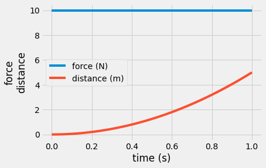

Contents
import numpy as np
import matplotlib.pyplot as plt
plt.style.use('fivethirtyeight')
---------------------------------------------------------------------------
ModuleNotFoundError Traceback (most recent call last)
Input In [1], in <cell line: 2>()
1 import numpy as np
----> 2 import matplotlib.pyplot as plt
3 plt.style.use('fivethirtyeight')
ModuleNotFoundError: No module named 'matplotlib'
t = np.linspace(0, 1)
F = np.ones(len(t))*10
m = 1
x = F/m*t**2/2
plt.plot(t, F, label = 'force (N)')
plt.plot(t, x, label = 'distance (m)')
plt.xlabel('time (s)')
plt.ylabel('force\ndistance')
plt.legend();

plt.plot(x, F)
plt.xlabel('distance (m)')
plt.ylabel('force (N)')
plt.axis([0, 5, 0, 11])
(0.0, 5.0, 0.0, 11.0)
The applied force and distance are shown for a moving object. The distance follows a parabolic curve as \(x(t) = 5t^2\).
Draw these two graphs and color in areas for “total impulse” and “work done”
If the mass of the object is 1 kg, what is the kinetic energy at t = 1 s (its not rotating)